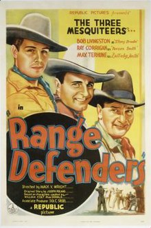

Range Defenders is a 1937 American Western "Three Mesquiteers"
B-movie[1] directed by Mack V. Wright.

Cast
- Robert Livingston as Stony Brooke
- Ray Corrigan as Tucson Smith
- Max Terhune as Lullaby Joslin
- Eleanor Stewart as Sylvia Ashton
- Harry Woods as John Harvey
- Earle Hodgins as Sheriff Dan Gray